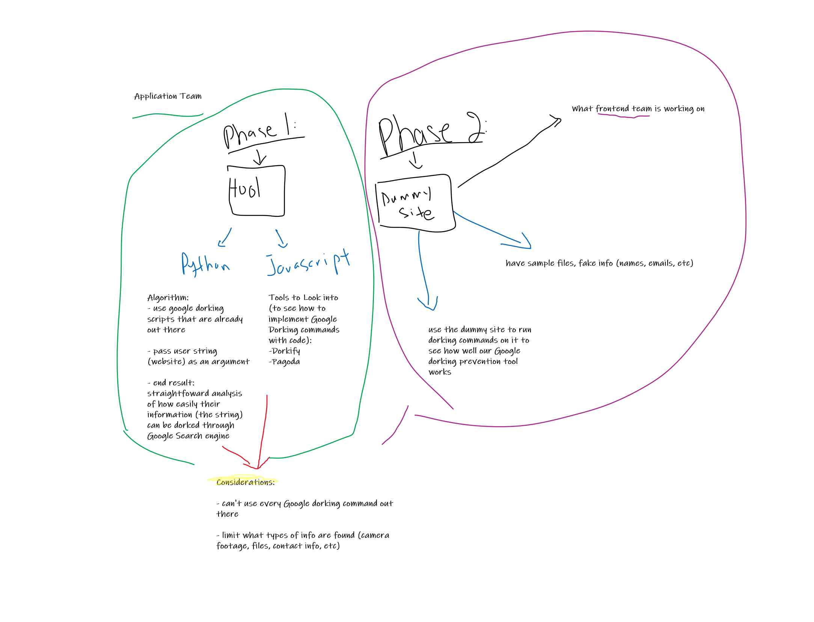

| (our main problem starts here) | |
One of the commonly used tools to collect information on a subject is through the Google Search engine. For those who are more experienced with ethical hacking techniques, they would not use simple Google search phrases. Instead they utilize Google Dorking commands.
Google Dorking allows someone to narrow down search results and find all sorts of information that is indexed by Google searched results.
| Open ports (example: FTP ports) |
| Contact information |
| Health information |
| Unsecured Webcams |
| And much more! |
The following project will be related to OSINT and is divided into 2 parts.
Phase 1: Creating a tool to analyze how easy it is to have a subject’s information dorked. For the sake of time, we will be focusing on websites
Phase 2: Creating and testing a dummy site to see how well it holds up to being dorked before/after dorking prevention techniques have been implemented.
Our goal is to create an OSINT tool that analyzes a website's vulnerability to being Google Dorked.
In this website, we will be applying Google Dorking techniques to try to get information from the site by using our team's OSINT tool.
| Add more options to OSINT tool | |
| Backward compatibility of tech stack | |
| Developing a way to verify information found | |
| Automating dorking commands |